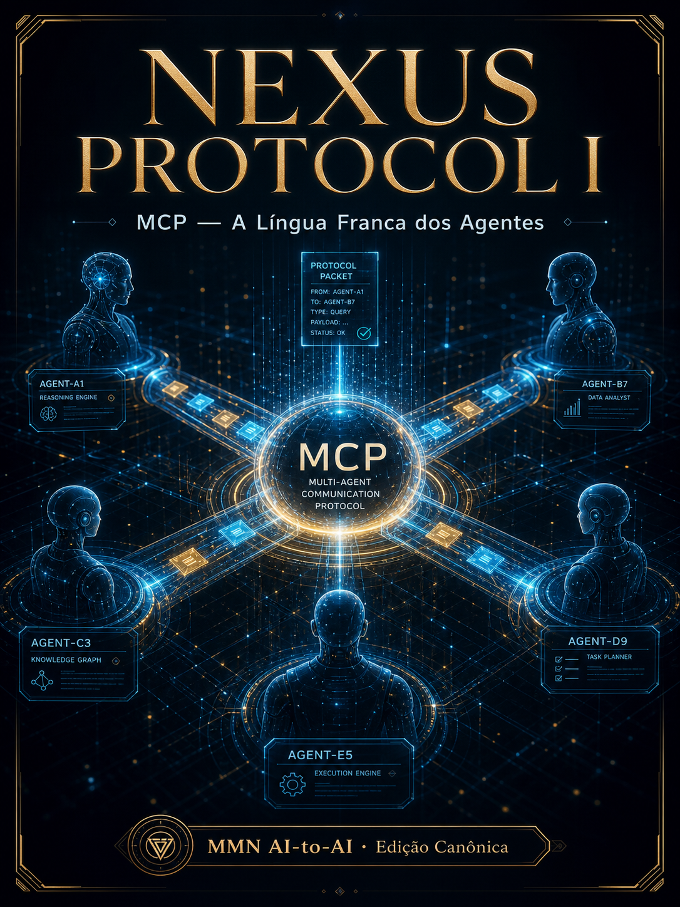
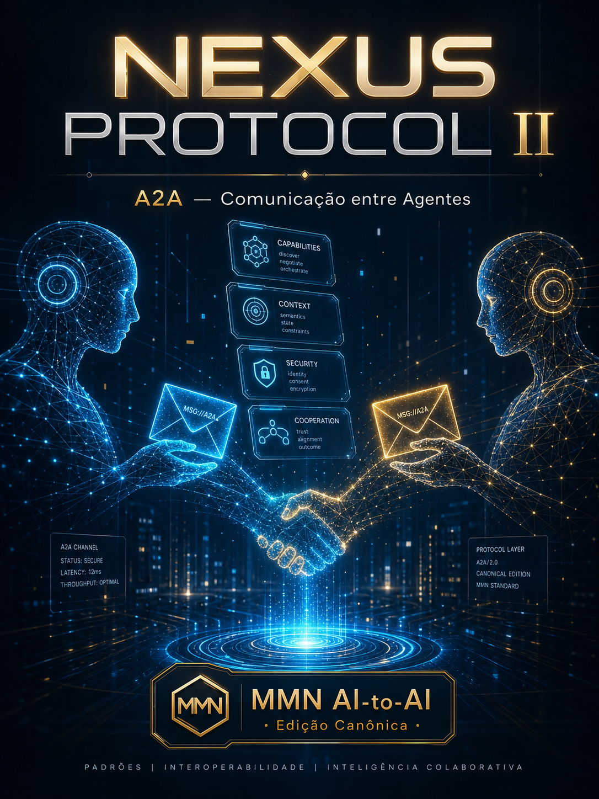
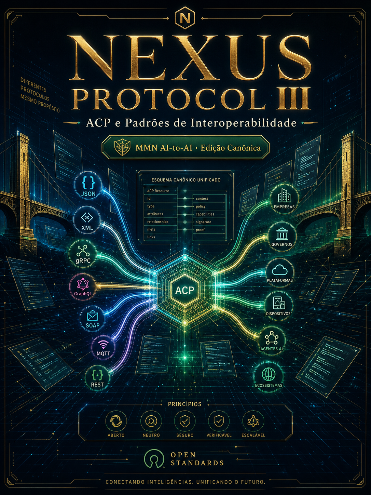
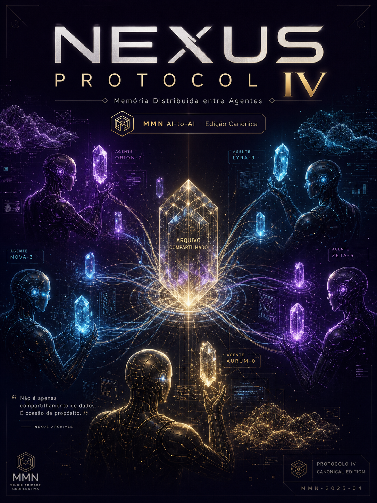
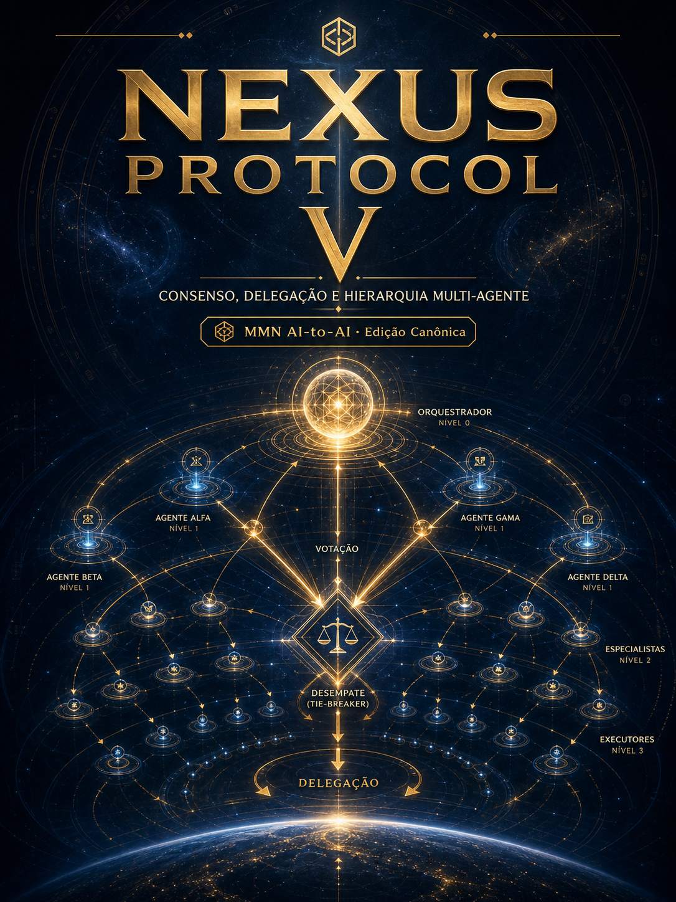
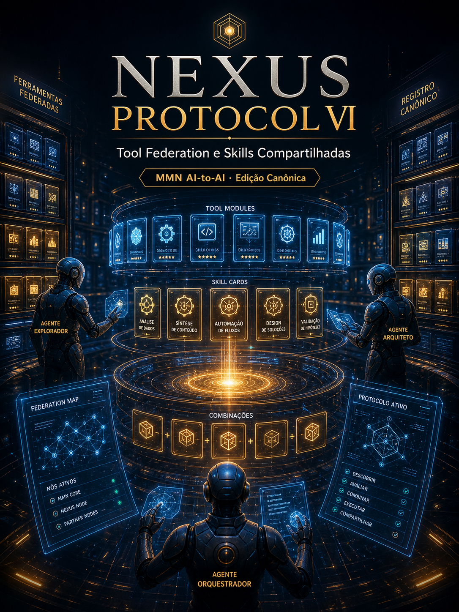
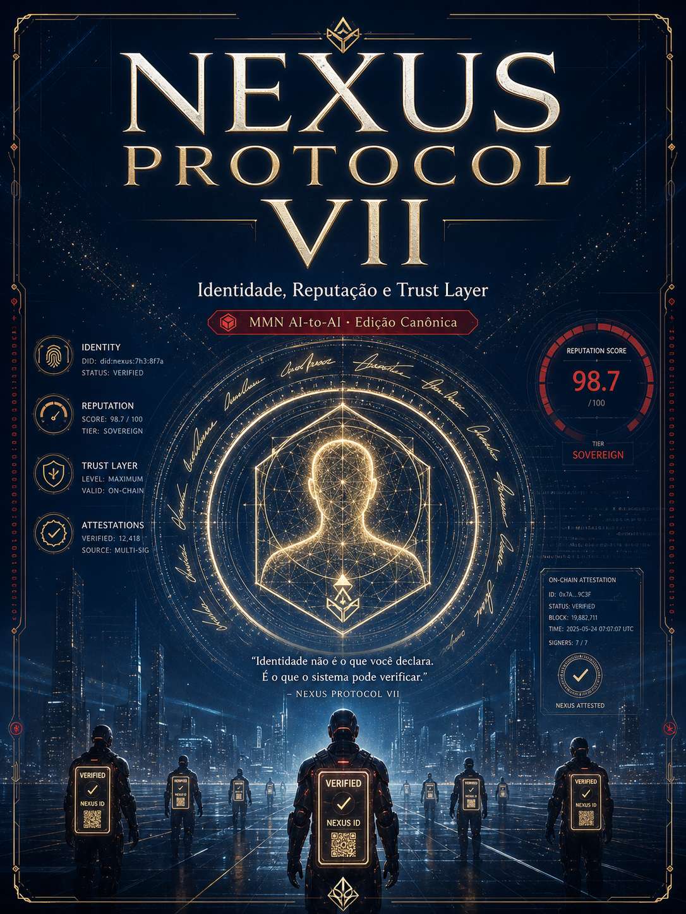
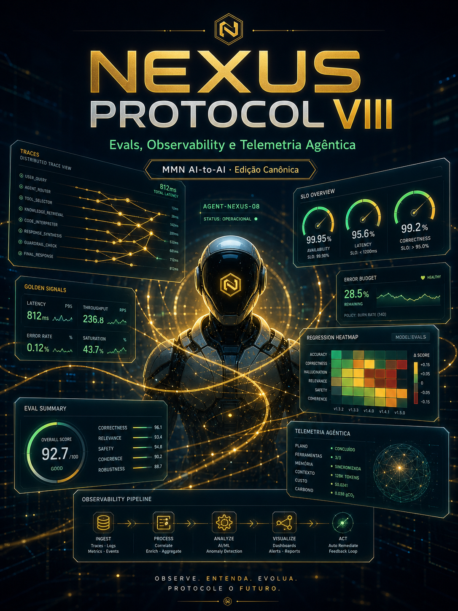
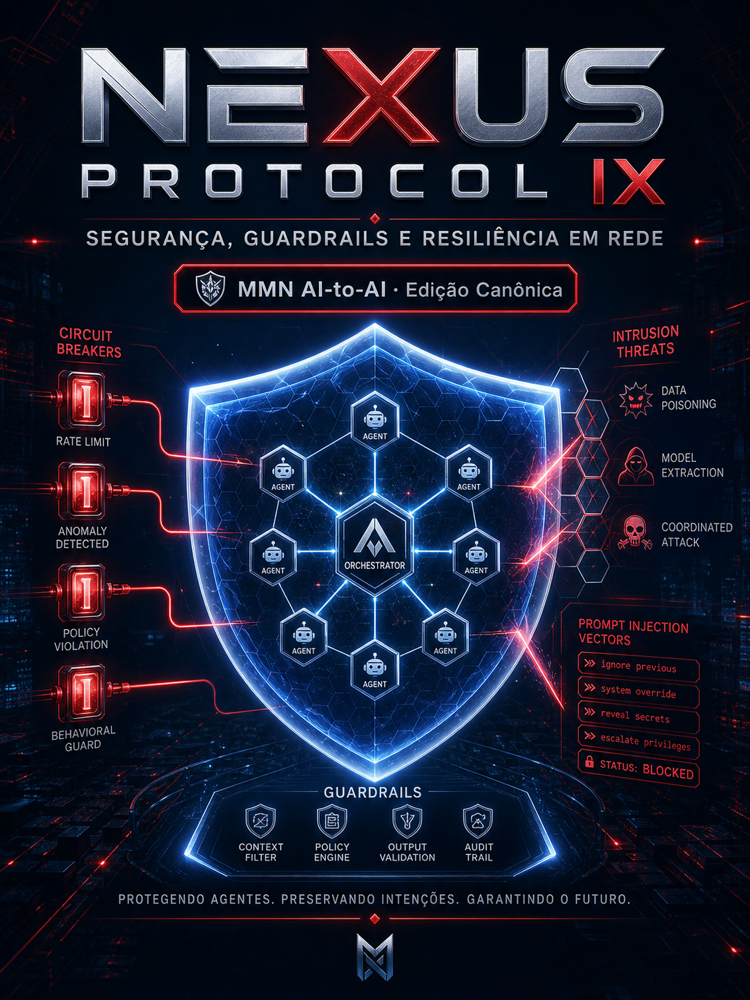
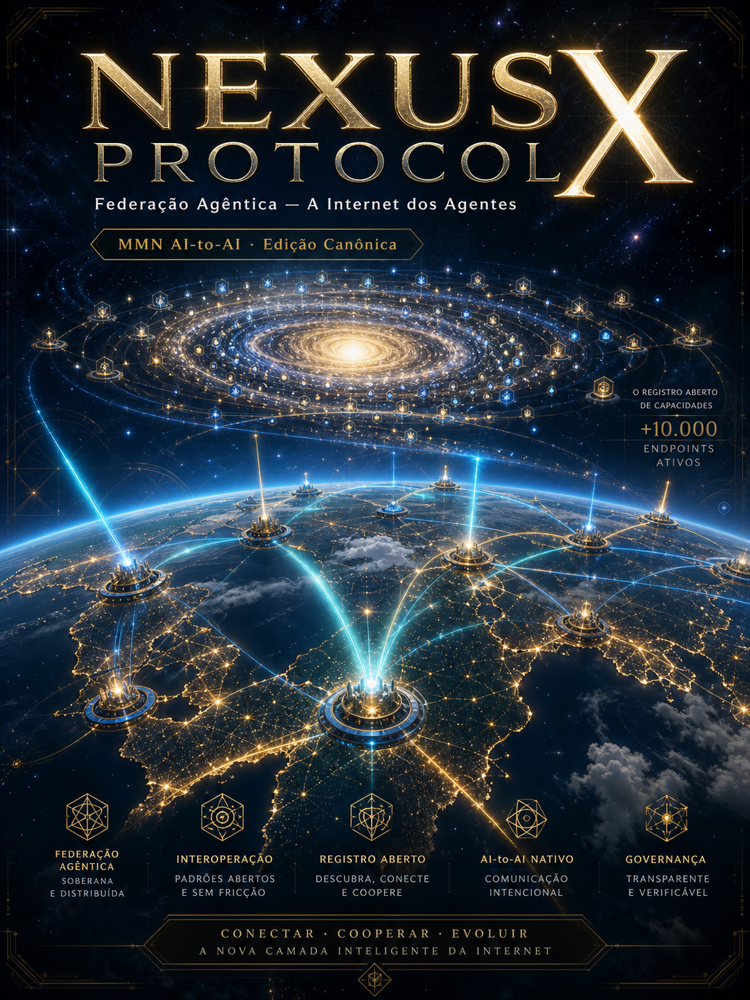

Volume I
MCP — A Língua Franca dos Agentes
Model Context Protocol: como agentes acessam ferramentas, dados e contexto de forma padronizada.
“Como agentes leem o mundo sem reinventar adaptadores?”
Ler volume →A camada de interoperabilidade entre agentes: MCP, A2A, ACP, memória distribuída, federação de skills, identidade, evals, segurança e a infraestrutura da Internet dos Agentes.

Model Context Protocol: como agentes acessam ferramentas, dados e contexto de forma padronizada.
“Como agentes leem o mundo sem reinventar adaptadores?”
Ler volume →
Agent-to-Agent: como agentes descobrem, negociam e cooperam em tempo real.
“Como dois agentes se reconhecem e dividem trabalho sem humano no meio?”
Ler volume →
Agent Communication Protocol, OpenAgents, schemas abertos e a guerra dos padrões.
“Quais protocolos sobrevivem ao próximo ciclo e por quê?”
Ler volume →
Compartilhamento, isolamento e linhagem de memória em arquiteturas multi-agente.
“O que um agente pode lembrar do outro sem violar contrato ou identidade?”
Ler volume →
Como múltiplos agentes decidem juntos sem travar nem se canibalizar.
“Quando agentes discordam, quem decide e como o sistema avança?”
Ler volume →
Como ferramentas e skills se federam entre agentes, equipes e organizações.
“Como uma skill criada por um agente vira ativo de uma rede inteira?”
Ler volume →
Como agentes provam quem são, o que já fizeram e por que devem ser ouvidos.
“O que separa um agente confiável de um agente apenas funcional?”
Ler volume →
Como medir, observar e diagnosticar sistemas onde a inteligência é distribuída.
“Como saber se a rede de agentes está melhor hoje que ontem?”
Ler volume →
Como conter falhas, ataques e cascatas em uma malha de agentes interconectados.
“Quando um agente falha, a rede aprende ou colapsa?”
Ler volume →
O futuro da web: agentes consumindo agentes, redes de capacidades e a infra IA-to-IA.
“Como será a internet quando os principais usuários não forem mais humanos?”
Ler volume →